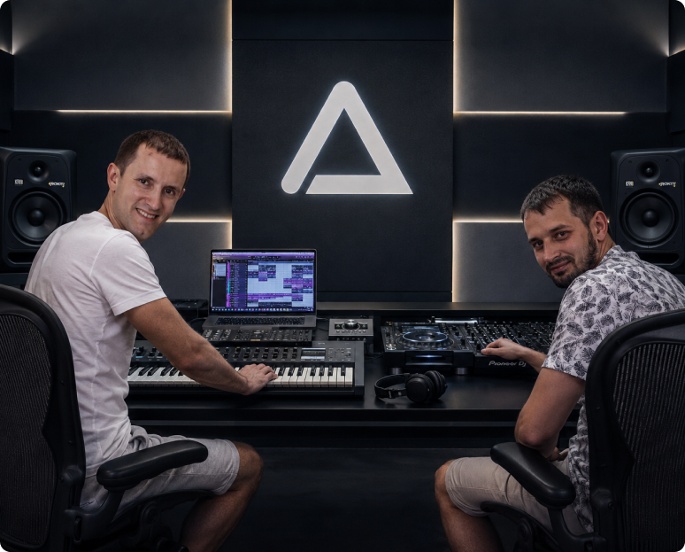

The music of A.L.Y.S.
The sound of A.L.Y.S.: melody, atmosphere and dancefloor energy
A.L.Y.S. is an electronic music project from Ukraine created by Andriy Lushchak (Andy Suncraft) and Yorick Serkez (DJ Base-T). Their music brings emotional songwriting into the pulse of modern dance music.

Where progressive house meets trance
The A.L.Y.S. catalogue moves across melodic EDM, progressive house, electro house, progressive trance and uplifting trance. These styles give the duo room to balance a steady groove with spacious synth textures and melodies that remain with the listener after the track ends. An A.L.Y.S. production may build toward a club moment or unfold more gradually, but the emotional thread stays central.
That range is part of the project's identity. Rather than treating genre as a strict boundary, A.L.Y.S. uses different tempos, arrangements and textures to serve each musical idea. Uplifting chord progressions can sit beside driving bass lines; a warm atmospheric passage can lead into a more energetic section.
Vocals as part of the story
Memorable vocal hooks are another important part of the A.L.Y.S. sound. The project has worked with vocalists and songwriters including Katari, Rebecca Louise Burch, Hidden Tigress and Louise Browne. In these tracks, the voice is more than a finishing touch: it helps give the production its point of view, emotion and sense of connection.
This focus shapes decisions from the first arrangement to vocal processing and the final mix. Space around a vocal line, the movement of the harmony and the energy of the rhythm all support the same musical message.
Explore the music
Tracks associated with A.L.Y.S. include Even More, Vacation, Nostalgia, Go Run, The Next Stop, Keep on Movin, New Life, Violet Sky, Arctic Stream, Love Deep Like Ocean and High Voltage. Together they offer different entry points into the project's melodic approach.
Listen to the selections on the music page, read the full A.L.Y.S. story, or explore how the duo approaches production and collaborations.